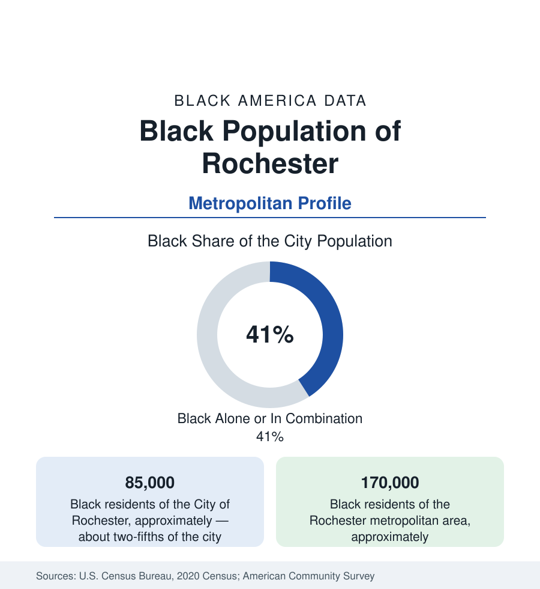

Black Cities
Black Rochester: Douglass's City After Kodak
Rochester holds about 85,000 Black residents in the city — two-fifths — and 170,000 across the metro. The census profile.

Rochester holds about 85,000 Black residents within the city — Black alone or in combination, roughly two-fifths of its 211,000 people — and about 170,000 across the metropolitan area. The city's Black history is the deepest of any upstate community: Frederick Douglass published the North Star here and is buried in Mount Hope Cemetery; Susan B. Anthony's and Douglass's Rochester was an abolitionist capital. The modern data describe what happened when the camera company that employed the twentieth century's Black Rochester collapsed.
The metro counts Monroe County and its ring — the county holding the overwhelming share of the community within the city and its inner suburbs, in one of the most city-concentrated Black geographies in the Northeast.
The Third and Seventh Wards, the 19th
Black Rochester's historic districts are the Third Ward (Corn Hill — the city's oldest neighborhood, Douglass's era's Black and abolitionist ground, gentrified in the preservation era into the city's showcase) and the Seventh Ward and Upper Falls districts east and north (the postwar community's core around Joseph Avenue — the commercial spine whose 1964 disorder, among the first of the era's Northern uprisings, marked the Kodak prosperity's limits), and the 19th Ward across the Genesee — the large southwest district that became the stable Black middle-class neighborhood of the Kodak decades, its broad streets of single-family homes the community's geographic anchor to this day. The modern distribution adds the northwest (Gates, Greece's southern edge) and the eastern suburbs' increments (Chili, Henrietta's commercial orbit), with the city's east-side Latino districts adjoining the Black northeast in the Upper Falls data.
The Kodak Economy and Its Collapse
Eastman Kodak employed in the range of 60,000 people in Rochester at its peak — a company town's payroll in a diversified city's clothing — and its Black workforce, built through the civil-rights-era pressure campaigns (FIGHT, the 1960s organization Saul Alinsky helped found, made Kodak's hiring its famous target and won the era's landmark corporate agreement), formed the broadest Black industrial middle class in upstate New York. The bankruptcy of 2012 closed the file: the metro lost the payroll across two decades of downsizing, and the replacement economy (the university and medical center — now the largest employers — optics-photonics startups in Kodak's literal buildings, the Wegmans grocery empire's headquarters) distributes its jobs on the eds-and-meds pattern. The data consequence is the profile's spine: Rochester's Black poverty rates rank among the highest of any American city in the ACS comparisons (its child poverty figures have topped national lists), within a metro whose suburbs record comfortable medians — the upstate city-suburb split at maximum aperture.
Indicators, Schools, and Institutions
The Rochester City School District — majority Black and Latino, among New York's most fiscally and academically distressed, under state monitor oversight in the current era — is the education file's local form, against the suburban districts (Greece, Gates-Chili, Pittsford at the affluent pole) of the county map. Institutions run deep for the population: the Douglass legacy infrastructure (the Frederick Douglass Family Initiatives, the statues and the airport bearing his name), the Memorial AME Zion Church (his era's congregation), the Urban League of Rochester, a Black church geography in the wards, and the University of Rochester's and RIT's growing engagement as the eds economy's anchors. The refugee resettlement layer (Rochester is a significant resettlement city) diversifies the northwest districts' data.
Change and the Estimates
The estimates show a metro of modest growth whose Black population suburbanizes slowly — Greece, Chili, and Henrietta gaining — while the city's Black share holds around two-fifths and its population stabilizes after the Kodak decades' decline. The Inner Loop's removal (the filled eastern segment, the northern segment in planning) is the physical-equity file — a highway Rochester is unbuilding, tract by tract — and the Bull's Head and west-side redevelopments grade the community's share of the post-Kodak city being assembled on the medical center's growth.
Reading the Rochester Numbers
Rochester is the company-town profile with the nation's most eloquent Black founding father. Douglass chose this city to publish freedom's paper; Kodak's Black workers built its middle class; the post-Kodak data — two-fifths of a city, its highest-in-America poverty tables beside its suburbs' comfort — are the third act, being written now in the medical center's hiring halls.
More in Black Cities
Black Atlanta: Population, Distribution, and Growth of a Black Metropolis
Metro Atlanta holds more than two million Black residents — roughly one in three, second only to New York. The suburban distribution, migration history, and composition of Black Atlanta in the census data.
Black New York: The Largest Black Population in America
The New York metropolitan area holds about 3.4 million Black residents — more than any metro in the nation — and the city itself about two million. The census profile.
Black Washington: The District and the Metro
The Washington metro holds about 1.6 million Black residents, and the District itself — long a majority-Black city — now records a Black share near 41 percent. The census profile.
Source: U.S. Census Bureau, 2020 Census; American Community Survey; Population Estimates Program.